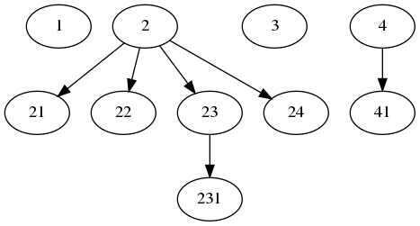
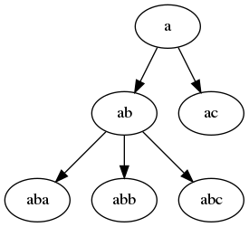
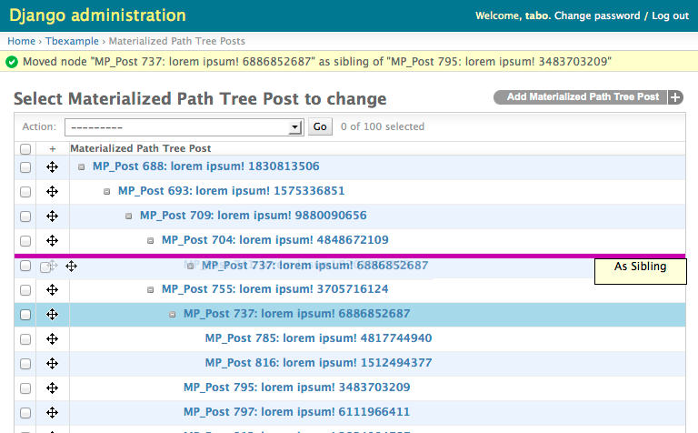
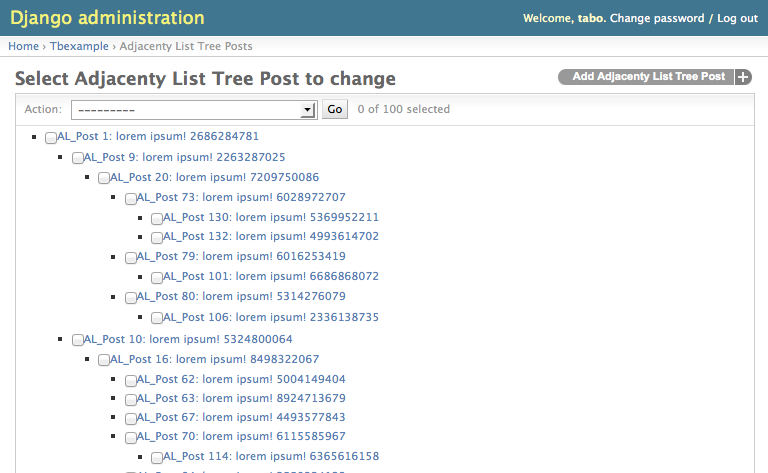

django-treebeard¶
django-treebeard is a library that implements efficient tree implementations for the Django Web Framework 1.8+, written by Gustavo Picón and licensed under the Apache License 2.0.
django-treebeard is:
- Flexible: Includes 3 different tree implementations with the same API:
- Fast: Optimized non-naive tree operations
- Easy: Uses Django’s Model inheritance with Abstract base classes. to define your own models.
- Clean: Testable and well tested code base. Code/branch test coverage is above 96%.
Overview¶
Installation¶
Prerequisites¶
django-treebeard needs at least Python 3.6 to run, and Django 2.2 or later.
Installing¶
You have several ways to install django-treebeard. If you’re not sure,
just use pip
pip (or easy_install)¶
You can install the release versions from
django-treebeard’s PyPI page using pip:
$ pip install django-treebeard
or if for some reason you can’t use pip, you can try easy_install,
(at your own risk):
$ easy_install --always-unzip django-treebeard
setup.py¶
Download a release from the treebeard download page and unpack it, then run:
$ python setup.py install
.deb packages¶
Both Debian and Ubuntu include django-treebeard as a package, so you can
just use:
$ apt-get install python-django-treebeard
or:
$ aptitude install python-django-treebeard
Remember that the packages included in linux distributions are usually not the most recent versions.
Configuration¶
Add 'treebeard' to the
INSTALLED_APPS section in your django
settings file.
Note
If you are going to use the TreeAdmin
class, you need to add the path to treebeard’s templates in
TEMPLATE_DIRS.
Also you need to add
django.template.context_processors.request
to TEMPLATES['OPTIONS']['context_processors']
setting in your django settings file (see https://docs.djangoproject.com/en/1.11/ref/templates/upgrading/ for how to define this setting within the TEMPLATES settings). For more recent versions of Django, use django.core.context_processors.request instead.
Tutorial¶
Create a basic model for your tree. In this example we’ll use a Materialized Path tree:
from django.db import models
from treebeard.mp_tree import MP_Node
class Category(MP_Node):
name = models.CharField(max_length=30)
node_order_by = ['name']
def __str__(self):
return 'Category: {}'.format(self.name)
Create and apply migrations:
$ python manage.py makemigrations
$ python manage.py migrate
Let’s create some nodes:
>>> from treebeard_tutorial.models import Category
>>> get = lambda node_id: Category.objects.get(pk=node_id)
>>> root = Category.add_root(name='Computer Hardware')
>>> node = get(root.pk).add_child(name='Memory')
>>> get(node.pk).add_sibling(name='Hard Drives')
<Category: Category: Hard Drives>
>>> get(node.pk).add_sibling(name='SSD')
<Category: Category: SSD>
>>> get(node.pk).add_child(name='Desktop Memory')
<Category: Category: Desktop Memory>
>>> get(node.pk).add_child(name='Laptop Memory')
<Category: Category: Laptop Memory>
>>> get(node.pk).add_child(name='Server Memory')
<Category: Category: Server Memory>
Note
Why retrieving every node again after the first operation? Because
django-treebeard uses raw queries for most write operations,
and raw queries don’t update the django objects of the db entries they
modify. See: Known Caveats.
We just created this tree:
You can see the tree structure with code:
>>> Category.dump_bulk()
[{'id': 1, 'data': {'name': u'Computer Hardware'},
'children': [
{'id': 3, 'data': {'name': u'Hard Drives'}},
{'id': 2, 'data': {'name': u'Memory'},
'children': [
{'id': 5, 'data': {'name': u'Desktop Memory'}},
{'id': 6, 'data': {'name': u'Laptop Memory'}},
{'id': 7, 'data': {'name': u'Server Memory'}}]},
{'id': 4, 'data': {'name': u'SSD'}}]}]
>>> Category.get_annotated_list()
[(<Category: Category: Computer Hardware>,
{'close': [], 'level': 0, 'open': True}),
(<Category: Category: Hard Drives>,
{'close': [], 'level': 1, 'open': True}),
(<Category: Category: Memory>,
{'close': [], 'level': 1, 'open': False}),
(<Category: Category: Desktop Memory>,
{'close': [], 'level': 2, 'open': True}),
(<Category: Category: Laptop Memory>,
{'close': [], 'level': 2, 'open': False}),
(<Category: Category: Server Memory>,
{'close': [0], 'level': 2, 'open': False}),
(<Category: Category: SSD>,
{'close': [0, 1], 'level': 1, 'open': False})]
>>> Category.get_annotated_list_qs(Category.objects.filter(name__icontains='Hardware'))
[(<Category: Category: Computer Hardware>, {'open': True, 'close': [], 'level': 0})]
Read the treebeard.models.Node API reference for detailed info.
Known Caveats¶
Raw Queries¶
django-treebeard uses Django raw SQL queries for
some write operations, and raw queries don’t update the objects in the
ORM since it’s being bypassed.
Because of this, if you have a node in memory and plan to use it after a tree modification (adding/removing/moving nodes), you need to reload it.
Overriding the default manager¶
One of the most common source of bug reports in django-treebeard
is the overriding of the default managers in the subclasses.
django-treebeard relies on the default manager for correctness
and internal maintenance. If you override the default manager,
by overriding the objects member in your subclass, you
WILL have errors and inconsistencies in your tree.
To avoid this problem, if you need to override the default manager, you’ll NEED to subclass the manager from the base manager class for the tree you are using.
Read the documentation in each tree type for details.
Custom Managers¶
Related to the previous caveat, if you need to create custom managers, you NEED to subclass the manager from the base manager class for the tree you are using.
Read the documentation in each tree type for details.
Copying model instances¶
Starting in version 4.5, we made a change to support custom names in primary fields that exposed a bug in Django’s documentation. This has been fixed in the dev version of Django (3.2 as of writing this), but even when using older versions, the new instructions apply.
Changelog¶
Release 4.7 (Apr 7, 2023)¶
- Drop support for Django 4.0.
- Add support for Django 4.2.
Release 4.6.1 (Feb 5, 2023)¶
- Fix unescaped string representation of AL_Node models in the Django admin. Thanks to goodguyandy for reporting the issue.
- Optimise MP_Node.get_descendants to avoid database queries when called on a leaf node.
Release 4.6 (Jan 2, 2023)¶
- Drop support for Django 3.1 and lower.
- Add support for Django 4.0 and 4.1.
- Drop support for Python 3.7 and lower.
- Add support for Python 3.10 and Python 3.11.
- Change the return value of delete() for all node classes to be consistent with Django, and return a tuple of the number of objects deleted and a dictionary with the number of deletions per object type.
- Change the delete() methods for all node classes to accept arbitrary positional and keyword arguments which are passed to the parent method.
- Set alters_data and queryset_only attributes on the delete() methods for all node classes to prevent them being used in an unwanted context (e.g., in Django templates).
- Drop dependency on jQuery UI in the admin.
Release 4.5.1 (Feb 22, 2021)¶
- Removed unnecessary default in MP’s depth field.
Release 4.5 (Feb 17, 2021)¶
- Add support for custom primary key fields with custom names.
- Add support for Python 3.9.
- Add support for MSSQL 2019.
- Add Code of conduct
- Removed outdated Sqlite workaround code
- Remove last remains of Python 2.7 code
- Use Pytest-django and fixtures for testing
Release 4.4 (Jan 13, 2021)¶
- Implement a non-destructive path-fixing algorithm for MP_Node.fix_tree.
- Ensure post_save is triggered after the parent node is updated in MP_AddChildHandler.
- Fix static URL generation to use static template tag instead of constructing the URL manually.
- Declare support for Django 2.2, 3.0 and 3.1.
- Drop support for Django 2.1 and lower.
- Drop support for Python 2.7 and Python 3.5.
- Increase performance for MoveNodeForm when using large trees.
Release 4.3.1 (Dec 25, 2019)¶
- Added check to avoid unnecessary database query for MP_Node.get_ancestors() if the node is a root node.
- Drop support for Python-3.4.
- Play more nicely with other form classes, that implement __init__(self, *args, **kwargs), e.g. django-parler’s TranslatableModelForm, where kwargs.get(‘instance’) is None when called from here.
- Sorting on path on necessary queries, fixes some issues and stabilizes the whole MP section.
- Add German translation strings.
Release 4.3 (Apr 16, 2018)¶
- Support for Django-2.0
Release 4.2.2 (Mar 11, 2018)¶
- Bugfix issues #97: UnboundLocalError raised on treebeard admin
Release 4.2.1 (Mar 9, 2018)¶
- Bugfix issues #90: admin change list view and jsi18n load for Django-1.11
Release 4.2.0 (Dec 8, 2017)¶
- Support for Django-2.0
Release 4.1.2 (Jun 22, 2017)¶
- Fixed MANIFEST.in for Debian packaging.
Release 4.1.1 (May 24, 2017)¶
- Removed deprecated templatetag inclusion
- Added support for Python-3.6
- Added support for MS-SQL
Release 4.1.0 (Nov 24, 2016)¶
- Add support for Django-1.10
- Drop support for Django-1.7
- Moved Repository from Bitbucket to GitHub
- Moved documentation to https://django-treebeard.readthedocs.io/
- Moved continuous integration to https://travis-ci.org/django-treebeard/django-treebeard
Release 4.0.1 (May 1, 2016)¶
- Escape input in forms (Martin Koistinen / Divio)
- Clarification on model detail pages (Michael Huang)
Release 4.0 (Dec 28, 2015)¶
- Added support for 3.5 and Django 1.7, 1.8 and 1.9
- Django 1.6 is no longer supported.
- Remove deprecated backports needed for now unsupported Django versions
- Fixed a bug with queryset deletion not handling inheritance correctly.
- Assorted documentation fixes
Release 3.0 (Jan 18, 2015)¶
- Limited tests (and hence support) to Python 2.7+/3.4+ and Django 1.6+
- Removed usage of deprecated Django functions.
- Fixed documentation issues.
- Fixed issues in MoveNodeForm
- Added get_annotated_list_qs and max_depth for get_annotated_list
Release 2.0 (April 2, 2014)¶
- Stable release.
Release 2.0rc2 (March, 2014)¶
- Support models that use multi-table inheritance (Matt Wescott)
- Tree methods called on proxy models should consistently return instances of that proxy model (Matt Wescott)
Release 2.0rc1 (February, 2014)¶
- Fixed unicode related issue in the template tags.
- Major documentation cleanup.
- More warnings on the use of managers.
- Faster MP’s is_root() method.
Release 2.0b2 (December, 2013)¶
- Dropped support for Python 2.5
Release 2.0b1 (May 29, 2013)¶
This is a beta release.
- Added support for Django 1.5 and Python 3.X
- Updated docs: the library supports python 2.5+ and Django 1.4+. Dropped support for older versions
- Revamped admin interface for MP and NS trees, supporting drag&drop to reorder nodes. Work on this patch was sponsored by the Oregon Center for Applied Science, inspired by FeinCMS developed by Jesús del Carpio with tests from Fernando Gutierrez. Thanks ORCAS!
- Updated setup.py to use distribute/setuptools instead of distutils
- Now using pytest for testing
- Small optimization to ns_tree.is_root
- Moved treebeard.tests to it’s own directory (instead of tests.py)
- Added the runtests.py test runner
- Added tox support
- Fixed drag&drop bug in the admin
- Fixed a bug when moving MP_Nodes
- Using .pk instead of .id when accessing nodes.
- Removed the Benchmark (tbbench) and example (tbexample) apps.
- Fixed url parts join issues in the admin.
- Fixed: Now installing the static resources
- Fixed ManyToMany form field save handling
- In the admin, the node is now saved when moving so it can trigger handlers and/or signals.
- Improved translation files, including javascript.
- Renamed Node.get_database_engine() to Node.get_database_vendor(). As the name implies, it returns the database vendor instead of the engine used. Treebeard will get the value from Django, but you can subclass the method if needed.
Release 1.61 (Jul 24, 2010)¶
- Added admin i18n. Included translations: es, ru
- Fixed a bug when trying to introspect the database engine used in Django 1.2+ while using new style db settings (DATABASES). Added Node.get_database_engine to deal with this.
Release 1.60 (Apr 18, 2010)¶
- Added get_annotated_list
- Complete revamp of the documentation. It’s now divided in sections for easier reading, and the package includes .rst files instead of the html build.
- Added raw id fields support in the admin
- Fixed setup.py to make it work in 2.4 again
- The correct ordering in NS/MP trees is now enforced in the queryset.
- Cleaned up code, removed some unnecessary statements.
- Tests refactoring, to make it easier to spot the model being tested.
- Fixed support of trees using proxied models. It was broken due to a bug in Django.
- Fixed a bug in add_child when adding nodes to a non-leaf in sorted MP.
- There are now 648 unit tests. Test coverage is 96%
- This will be the last version compatible with Django 1.0. There will be a a 1.6.X branch maintained for urgent bug fixes, but the main development will focus on recent Django versions.
Release 1.52 (Dec 18, 2009)¶
- Really fixed the installation of templates.
Release 1.51 (Dec 16, 2009)¶
- Forgot to include treebeard/tempates/*.html in MANIFEST.in
Release 1.5 (Dec 15, 2009)¶
New features added¶
- Forms
- Added MoveNodeForm
- Django Admin
- Added TreeAdmin
- MP_Node
- Added 2 new checks in MP_Node.find_problems():
- a list of ids of nodes with the wrong depth value for their path
- a list of ids nodes that report a wrong number of children
- Added a new (safer and faster but less comprehensive) MP_Node.fix_tree() approach.
- Added 2 new checks in MP_Node.find_problems():
- Documentation
- Added warnings in the documentation when subclassing MP_Node or NS_Node and adding a new Meta.
- HTML documentation is now included in the package.
- CHANGES file and section in the docs.
- Other changes:
- script to build documentation
- updated numconv.py
Bugs fixed¶
- Added table quoting to all the sql queries that bypass the ORM. Solves bug in postgres when the table isn’t created by syncdb.
- Removing unused method NS_Node._find_next_node
- Fixed MP_Node.get_tree to include the given parent when given a leaf node
Release 1.0 (Nov 19, 2008)¶
- First public release.
Reference¶
API¶
-
class
treebeard.models.Node(*args, **kwargs)¶ Bases:
django.db.models.base.ModelNode class
This is the base class that defines the API of all tree models in this library:
treebeard.mp_tree.MP_Node(materialized path)treebeard.ns_tree.NS_Node(nested sets)treebeard.al_tree.AL_Node(adjacency list)
Warning
Please be aware of the Known Caveats when using this library.
-
classmethod
add_root(**kwargs)¶ Adds a root node to the tree. The new root node will be the new rightmost root node. If you want to insert a root node at a specific position, use
add_sibling()in an already existing root node instead.Parameters: - **kwargs – object creation data that will be passed to the inherited Node model
- instance – Instead of passing object creation data, you can pass an already-constructed (but not yet saved) model instance to be inserted into the tree.
Returns: the created node object. It will be save()d by this method.
Raises: NodeAlreadySaved – when the passed
instancealready exists in the databaseExample:
MyNode.add_root(numval=1, strval='abcd')
Or, to pass in an existing instance:
new_node = MyNode(numval=1, strval='abcd') MyNode.add_root(instance=new_node)
-
add_child(**kwargs)¶ Adds a child to the node. The new node will be the new rightmost child. If you want to insert a node at a specific position, use the
add_sibling()method of an already existing child node instead.Parameters: - **kwargs – Object creation data that will be passed to the inherited Node model
- instance – Instead of passing object creation data, you can pass an already-constructed (but not yet saved) model instance to be inserted into the tree.
Returns: The created node object. It will be save()d by this method.
Raises: NodeAlreadySaved – when the passed
instancealready exists in the databaseExample:
node.add_child(numval=1, strval='abcd')
Or, to pass in an existing instance:
new_node = MyNode(numval=1, strval='abcd') node.add_child(instance=new_node)
-
add_sibling(pos=None, **kwargs)¶ Adds a new node as a sibling to the current node object.
Parameters: - pos –
The position, relative to the current node object, where the new node will be inserted, can be one of:
first-sibling: the new node will be the new leftmost siblingleft: the new node will take the node’s place, which will be moved to the right 1 positionright: the new node will be inserted at the right of the nodelast-sibling: the new node will be the new rightmost siblingsorted-sibling: the new node will be at the right position according to the value of node_order_by
- **kwargs – Object creation data that will be passed to the inherited Node model
- instance – Instead of passing object creation data, you can pass an already-constructed (but not yet saved) model instance to be inserted into the tree.
Returns: The created node object. It will be saved by this method.
Raises: - InvalidPosition – when passing an invalid
posparm - InvalidPosition – when
node_order_byis enabled and theposparm wasn’tsorted-sibling - MissingNodeOrderBy – when passing
sorted-siblingasposand thenode_order_byattribute is missing - NodeAlreadySaved – when the passed
instancealready exists in the database
Examples:
node.add_sibling('sorted-sibling', numval=1, strval='abc')
Or, to pass in an existing instance:
new_node = MyNode(numval=1, strval='abc') node.add_sibling('sorted-sibling', instance=new_node)
- pos –
-
delete(*args, **kwargs)¶ Removes a node and all it’s descendants.
Note
Call our queryset’s delete to handle children removal. Subclasses will handle extra maintenance.
-
classmethod
get_tree(parent=None)¶ Returns: A list of nodes ordered as DFS, including the parent. If no parent is given, the entire tree is returned.
-
get_depth()¶ Returns: the depth (level) of the node Example:
node.get_depth()
-
get_ancestors()¶ Returns: A queryset containing the current node object’s ancestors, starting by the root node and descending to the parent. (some subclasses may return a list) Example:
node.get_ancestors()
-
get_children()¶ Returns: A queryset of all the node’s children Example:
node.get_children()
-
get_children_count()¶ Returns: The number of the node’s children Example:
node.get_children_count()
-
get_descendants()¶ Returns: A queryset of all the node’s descendants, doesn’t include the node itself (some subclasses may return a list). Example:
node.get_descendants()
-
get_descendant_count()¶ Returns: the number of descendants of a node. Example:
node.get_descendant_count()
-
get_first_child()¶ Returns: The leftmost node’s child, or None if it has no children. Example:
node.get_first_child()
-
get_last_child()¶ Returns: The rightmost node’s child, or None if it has no children. Example:
node.get_last_child()
-
get_first_sibling()¶ Returns: The leftmost node’s sibling, can return the node itself if it was the leftmost sibling. Example:
node.get_first_sibling()
-
get_last_sibling()¶ Returns: The rightmost node’s sibling, can return the node itself if it was the rightmost sibling. Example:
node.get_last_sibling()
-
get_prev_sibling()¶ Returns: The previous node’s sibling, or None if it was the leftmost sibling. Example:
node.get_prev_sibling()
-
get_next_sibling()¶ Returns: The next node’s sibling, or None if it was the rightmost sibling. Example:
node.get_next_sibling()
-
get_parent(update=False)¶ Returns: the parent node of the current node object. Caches the result in the object itself to help in loops. Parameters: update – Updates the cached value. Example:
node.get_parent()
-
get_root()¶ Returns: the root node for the current node object. Example:
node.get_root()
-
get_siblings()¶ Returns: A queryset of all the node’s siblings, including the node itself. Example:
node.get_siblings()
-
is_child_of(node)¶ Returns: Trueif the node is a child of another node given as an argument, else, returnsFalseParameters: node – The node that will be checked as a parent Example:
node.is_child_of(node2)
-
is_descendant_of(node)¶ Returns: Trueif the node is a descendant of another node given as an argument, else, returnsFalseParameters: node – The node that will be checked as an ancestor Example:
node.is_descendant_of(node2)
-
is_sibling_of(node)¶ Returns: Trueif the node is a sibling of another node given as an argument, else, returnsFalseParameters: node – The node that will be checked as a sibling Example:
node.is_sibling_of(node2)
-
is_root()¶ Returns: True if the node is a root node (else, returns False) Example:
node.is_root()
-
is_leaf()¶ Returns: True if the node is a leaf node (else, returns False) Example:
node.is_leaf()
-
move(target, pos=None)¶ Moves the current node and all it’s descendants to a new position relative to another node.
Parameters: - target – The node that will be used as a relative child/sibling when moving
- pos –
The position, relative to the target node, where the current node object will be moved to, can be one of:
first-child: the node will be the new leftmost child of thetargetnodelast-child: the node will be the new rightmost child of thetargetnodesorted-child: the new node will be moved as a child of thetargetnode according to the value ofnode_order_byfirst-sibling: the node will be the new leftmost sibling of thetargetnodeleft: the node will take thetargetnode’s place, which will be moved to the right 1 positionright: the node will be moved to the right of thetargetnodelast-sibling: the node will be the new rightmost sibling of thetargetnodesorted-sibling: the new node will be moved as a sibling of thetargetnode according to the value ofnode_order_by
Note
If no
posis given the library will uselast-sibling, orsorted-siblingifnode_order_byis enabled.
Returns: None
Raises: - InvalidPosition – when passing an invalid
posparm - InvalidPosition – when
node_order_byis enabled and theposparm wasn’tsorted-siblingorsorted-child - InvalidMoveToDescendant – when trying to move a node to one of it’s own descendants
- PathOverflow – when the library can’t make room for the node’s new position
- MissingNodeOrderBy – when passing
sorted-siblingorsorted-childasposand thenode_order_byattribute is missing
Note
The node can be moved under another root node.
Examples:
node.move(node2, 'sorted-child') node.move(node2, 'prev-sibling')
-
save(force_insert=False, force_update=False, using=None, update_fields=None)¶ Save the current instance. Override this in a subclass if you want to control the saving process.
The ‘force_insert’ and ‘force_update’ parameters can be used to insist that the “save” must be an SQL insert or update (or equivalent for non-SQL backends), respectively. Normally, they should not be set.
-
classmethod
get_first_root_node()¶ Returns: The first root node in the tree or Noneif it is empty.Example:
MyNodeModel.get_first_root_node()
-
classmethod
get_last_root_node()¶ Returns: The last root node in the tree or Noneif it is empty.Example:
MyNodeModel.get_last_root_node()
-
classmethod
get_root_nodes()¶ Returns: A queryset containing the root nodes in the tree. Example:
MyNodeModel.get_root_nodes()
-
classmethod
load_bulk(bulk_data, parent=None, keep_ids=False)¶ Loads a list/dictionary structure to the tree.
Parameters: - bulk_data –
The data that will be loaded, the structure is a list of dictionaries with 2 keys:
data: will store arguments that will be passed for object creation, andchildren: a list of dictionaries, each one has it’s owndataandchildrenkeys (a recursive structure)
- parent – The node that will receive the structure as children, if not specified the first level of the structure will be loaded as root nodes
- keep_ids – If enabled, loads the nodes with the same primary keys that are given in the structure. Will error if there are nodes without primary key info or if the primary keys are already used.
Returns: A list of the added node ids.
Note
Any internal data that you may have stored in your nodes’ data (
path,depth) will be ignored.Note
If your node model has a ForeignKey this method will try to load the related object before loading the data. If the related object doesn’t exist it won’t load anything and will raise a DoesNotExist exception. This is done because the dump_data method uses integers to dump related objects.
Note
If your node model has
node_order_byenabled, it will take precedence over the order in the structure.Example:
data = [{'data':{'desc':'1'}}, {'data':{'desc':'2'}, 'children':[ {'data':{'desc':'21'}}, {'data':{'desc':'22'}}, {'data':{'desc':'23'}, 'children':[ {'data':{'desc':'231'}}, ]}, {'data':{'desc':'24'}}, ]}, {'data':{'desc':'3'}}, {'data':{'desc':'4'}, 'children':[ {'data':{'desc':'41'}}, ]}, ] # parent = None MyNodeModel.load_bulk(data, None)
Will create:
- bulk_data –
-
classmethod
dump_bulk(parent=None, keep_ids=True)¶ Dumps a tree branch to a python data structure.
Parameters: - parent – The node whose descendants will be dumped. The node itself will be included in the dump. If not given, the entire tree will be dumped.
- keep_ids – Stores the pk value (primary key) of every node. Enabled by default.
Returns: A python data structure, described with detail in
load_bulk()Example:
tree = MyNodeModel.dump_bulk() branch = MyNodeModel.dump_bulk(node_obj)
-
classmethod
find_problems()¶ Checks for problems in the tree structure.
-
classmethod
fix_tree()¶ Solves problems that can appear when transactions are not used and a piece of code breaks, leaving the tree in an inconsistent state.
-
classmethod
get_descendants_group_count(parent=None)¶ Helper for a very common case: get a group of siblings and the number of descendants (not only children) in every sibling.
Parameters: parent – The parent of the siblings to return. If no parent is given, the root nodes will be returned. Returns: A list (NOT a Queryset) of node objects with an extra attribute: descendants_count. Example:
# get a list of the root nodes root_nodes = MyModel.get_descendants_group_count() for node in root_nodes: print '%s by %s (%d replies)' % (node.comment, node.author, node.descendants_count)
-
classmethod
get_annotated_list(parent=None, max_depth=None)¶ Gets an annotated list from a tree branch.
Parameters: - parent – The node whose descendants will be annotated. The node itself will be included in the list. If not given, the entire tree will be annotated.
- max_depth – Optionally limit to specified depth
Example:
annotated_list = MyModel.get_annotated_list()
With data:
Will return:
[ (a, {'open':True, 'close':[], 'level': 0}) (ab, {'open':True, 'close':[], 'level': 1}) (aba, {'open':True, 'close':[], 'level': 2}) (abb, {'open':False, 'close':[], 'level': 2}) (abc, {'open':False, 'close':[0,1], 'level': 2}) (ac, {'open':False, 'close':[0], 'level': 1}) ]
This can be used with a template like:
{% for item, info in annotated_list %} {% if info.open %} <ul><li> {% else %} </li><li> {% endif %} {{ item }} {% for close in info.close %} </li></ul> {% endfor %} {% endfor %}
Note
This method was contributed originally by Alexey Kinyov, using an idea borrowed from django-mptt.
New in version 1.55.
-
classmethod
get_annotated_list_qs(qs)¶ Gets an annotated list from a queryset.
-
classmethod
get_database_vendor(action)¶ returns the supported database vendor used by a treebeard model when performing read (select) or write (update, insert, delete) operations.
Parameters: action – read or write Returns: postgresql, mysql or sqlite Example:
MyNodeModel.get_database_vendor("write")
New in version 1.61.
Materialized Path trees¶
This is an efficient implementation of Materialized Path
trees for Django, as described by Vadim Tropashko in SQL Design
Patterns. Materialized Path is probably the fastest way of working with
trees in SQL without the need of extra work in the database, like Oracle’s
CONNECT BY or sprocs and triggers for nested intervals.
In a materialized path approach, every node in the tree will have a
path attribute, where the full path from the root
to the node will be stored. This has the advantage of needing very simple
and fast queries, at the risk of inconsistency because of the
denormalization of parent/child foreign keys. This can be prevented
with transactions.
django-treebeard uses a particular approach: every step in the path has
a fixed width and has no separators. This makes queries predictable and
faster at the cost of using more characters to store a step. To address
this problem, every step number is encoded.
Also, two extra fields are stored in every node:
depth and numchild.
This makes the read operations faster, at the cost of a little more
maintenance on tree updates/inserts/deletes. Don’t worry, even with these
extra steps, materialized path is more efficient than other approaches.
Warning
As with all tree implementations, please be aware of the Known Caveats.
Note
The materialized path approach makes heavy use of LIKE in your
database, with clauses like WHERE path LIKE '002003%'. If you think
that LIKE is too slow, you’re right, but in this case the
path field is indexed in the database, and all
LIKE clauses that don’t start with a % character will use
the index. This is what makes the materialized path approach so fast.
-
class
treebeard.mp_tree.MP_Node(*args, **kwargs)¶ Bases:
treebeard.models.NodeAbstract model to create your own Materialized Path Trees.
Warning
Do not change the values of
path,depthornumchilddirectly: use one of the included methods instead. Consider these values read-only.Warning
Do not change the values of the
steplen,alphabetornode_order_byafter saving your first object. Doing so will corrupt the tree.Warning
If you need to define your own
Managerclass, you’ll need to subclassMP_NodeManager.Also, if in your manager you need to change the default queryset handler, you’ll need to subclass
MP_NodeQuerySet.Example:
class SortedNode(MP_Node): node_order_by = ['numval', 'strval'] numval = models.IntegerField() strval = models.CharField(max_length=255)
Read the API reference of
treebeard.models.Nodefor info on methods available in this class, or read the following section for methods with particular arguments or exceptions.-
steplen¶ Attribute that defines the length of each step in the
pathof a node. The default value of 4 allows a maximum of 1679615 children per node. Increase this value if you plan to store large trees (asteplenof 5 allows more than 60M children per node). Note that increasing this value, while increasing the number of children per node, will decrease the maxdepthof the tree (by default: 63). To increase the maxdepth, increase the max_length attribute of thepathfield in your model.
-
alphabet¶ Attribute: the alphabet that will be used in base conversions when encoding the path steps into strings. The default value,
0123456789ABCDEFGHIJKLMNOPQRSTUVWXYZis the most optimal possible value that is portable between the supported databases (which means: their default collation will order thepathfield correctly).Note
In case you know what you are doing, there is a test that is disabled by default that can tell you the optimal default alphabet in your enviroment. To run the test you must enable the
TREEBEARD_TEST_ALPHABETenviroment variable:$ TREEBEARD_TEST_ALPHABET=1 py.test -k test_alphabet
In OS X Mavericks, good readable values for the three supported databases in their default configuration:
Database Optimal Alphabet Base MySQL 5.6.17 0-9A-Z 36 PostgreSQL 9.3.4 0-9A-Za-z 62 Sqlite3 0-9A-Za-z 62 The default value is MySQL’s since it will work in all DBs, but when working with a better database, changing the
alphabetvalue is recommended in order to increase the density of the paths.For an even better approach, change the collation of the
pathcolumn in the database to handle raw ASCII, and use the printable ASCII characters (0x20 to 0x7E) as thealphabet.
-
node_order_by¶ Attribute: a list of model fields that will be used for node ordering. When enabled, all tree operations will assume this ordering.
Example:
node_order_by = ['field1', 'field2', 'field3']
-
path¶ CharField, stores the full materialized path for each node. The default value of it’s max_length, 255, is the max efficient and portable value for avarchar. Increase it to allow deeper trees (max depth by default: 63)Note
django-treebeard uses Django’s abstract model inheritance, so to change the
max_lengthvalue of the path in your model, you have to redeclare the path field in your model:class MyNodeModel(MP_Node): path = models.CharField(max_length=1024, unique=True)
Note
For performance, and if your database allows it, you can safely define the path column as ASCII (not utf-8/unicode/iso8859-1/etc) to keep the index smaller (and faster). Also note that some databases (mysql) have a small index size limit. InnoDB for instance has a limit of 765 bytes per index, so that would be the limit if your path is ASCII encoded. If your path column in InnoDB is using unicode, the index limit will be 255 characters since in MySQL’s indexes, unicode means 3 bytes per character.
Note
django-treebearduses numconv for path encoding.
-
depth¶ PositiveIntegerField, depth of a node in the tree. A root node has a depth of 1.
-
numchild¶ PositiveIntegerField, the number of children of the node.
-
classmethod
add_root(**kwargs)¶ Adds a root node to the tree.
This method saves the node in database. The object is populated as if via:
` obj = cls(**kwargs) `Raises: PathOverflow – when no more root objects can be added
-
add_child(**kwargs)¶ Adds a child to the node.
This method saves the node in database. The object is populated as if via:
` obj = self.__class__(**kwargs) `Raises: PathOverflow – when no more child nodes can be added
-
add_sibling(pos=None, **kwargs)¶ Adds a new node as a sibling to the current node object.
This method saves the node in database. The object is populated as if via:
` obj = self.__class__(**kwargs) `Raises: PathOverflow – when the library can’t make room for the node’s new position
-
move(target, pos=None)¶ Moves the current node and all it’s descendants to a new position relative to another node.
Raises: PathOverflow – when the library can’t make room for the node’s new position
-
classmethod
get_tree(parent=None)¶ Returns: A queryset of nodes ordered as DFS, including the parent. If no parent is given, the entire tree is returned. See:
treebeard.models.Node.get_tree()Note
This metod returns a queryset.
-
classmethod
find_problems()¶ Checks for problems in the tree structure, problems can occur when:
- your code breaks and you get incomplete transactions (always use transactions!)
- changing the
steplenvalue in a model (you mustdump_bulk()first, changesteplenand thenload_bulk()
Returns: A tuple of five lists: - a list of ids of nodes with characters not found in the
alphabet - a list of ids of nodes when a wrong
pathlength according tosteplen - a list of ids of orphaned nodes
- a list of ids of nodes with the wrong depth value for their path
- a list of ids nodes that report a wrong number of children
Note
A node won’t appear in more than one list, even when it exhibits more than one problem. This method stops checking a node when it finds a problem and continues to the next node.
Note
Problems 1, 2 and 3 can’t be solved automatically.
Example:
MyNodeModel.find_problems()
-
classmethod
fix_tree(destructive=False, fix_paths=False)¶ Solves some problems that can appear when transactions are not used and a piece of code breaks, leaving the tree in an inconsistent state.
The problems this method solves are:
- Nodes with an incorrect
depthornumchildvalues due to incorrect code and lack of database transactions. - “Holes” in the tree. This is normal if you move/delete nodes a lot. Holes in a tree don’t affect performance,
- Incorrect ordering of nodes when
node_order_byis enabled. Ordering is enforced on node insertion, so if an attribute innode_order_byis modified after the node is inserted, the tree ordering will be inconsistent.
Parameters: - fix_paths – A boolean value. If True, a slower, more complex fix_tree method
will be attempted. If False (the default), it will use a safe (and
fast!) fix approach, but it will only solve the
depthandnumchildnodes, it won’t fix the tree holes or broken path ordering. - destructive – Deprecated; alias for
fix_paths.
Example:
MyNodeModel.fix_tree()
- Nodes with an incorrect
-
-
class
treebeard.mp_tree.MP_NodeManager¶ Bases:
django.db.models.manager.ManagerCustom manager for nodes in a Materialized Path tree.
-
class
treebeard.mp_tree.MP_NodeQuerySet(model=None, query=None, using=None, hints=None)¶ Bases:
django.db.models.query.QuerySetCustom queryset for the tree node manager.
Needed only for the custom delete method.
Nested Sets trees¶
An implementation of Nested Sets trees for Django, as described by Joe Celko in Trees and Hierarchies in SQL for Smarties.
Nested sets have very efficient reads at the cost of high maintenance on write/delete operations.
Warning
As with all tree implementations, please be aware of the Known Caveats.
-
class
treebeard.ns_tree.NS_Node(*args, **kwargs)¶ Bases:
treebeard.models.NodeAbstract model to create your own Nested Sets Trees.
Warning
If you need to define your own
Managerclass, you’ll need to subclassNS_NodeManager.Also, if in your manager you need to change the default queryset handler, you’ll need to subclass
NS_NodeQuerySet.-
node_order_by¶ Attribute: a list of model fields that will be used for node ordering. When enabled, all tree operations will assume this ordering.
Example:
node_order_by = ['field1', 'field2', 'field3']
-
depth¶ PositiveIntegerField, depth of a node in the tree. A root node has a depth of 1.
-
lft¶ PositiveIntegerField
-
rgt¶ PositiveIntegerField
-
tree_id¶ PositiveIntegerField
-
classmethod
get_tree(parent=None)¶ Returns: A queryset of nodes ordered as DFS, including the parent. If no parent is given, all trees are returned. See:
treebeard.models.Node.get_tree()Note
This method returns a queryset.
-
-
class
treebeard.ns_tree.NS_NodeManager¶ Bases:
django.db.models.manager.ManagerCustom manager for nodes in a Nested Sets tree.
-
class
treebeard.ns_tree.NS_NodeQuerySet(model=None, query=None, using=None, hints=None)¶ Bases:
django.db.models.query.QuerySetCustom queryset for the tree node manager.
Needed only for the customized delete method.
Adjacency List trees¶
This is a simple implementation of the traditional Adjacency List Model for storing trees in relational databases.
In the adjacency list model, every node will have a
“parent” key, that will be NULL for root nodes.
Since django-treebeard must return trees ordered in a predictable way,
the ordering for models without the node_order_by
attribute will have an extra attribute that will store the relative
position of a node between it’s siblings: sib_order.
The adjacency list model has the advantage of fast writes at the cost of
slow reads. If you read more than you write, use
MP_Node instead.
Warning
As with all tree implementations, please be aware of the Known Caveats.
-
class
treebeard.al_tree.AL_Node(*args, **kwargs)¶ Bases:
treebeard.models.NodeAbstract model to create your own Adjacency List Trees.
Warning
If you need to define your own
Managerclass, you’ll need to subclassAL_NodeManager.-
node_order_by¶ Attribute: a list of model fields that will be used for node ordering. When enabled, all tree operations will assume this ordering.
Example:
node_order_by = ['field1', 'field2', 'field3']
-
parent¶ ForeignKeyto itself. This attribute MUST be defined in the subclass (sadly, this isn’t inherited correctly from the ABC in Django 1.0). Just copy&paste these lines to your model:parent = models.ForeignKey('self', related_name='children_set', null=True, db_index=True)
-
sib_order¶ PositiveIntegerFieldused to store the relative position of a node between it’s siblings. This attribute is mandatory ONLY if you don’t set anode_order_byfield. You can define it copy&pasting this line in your model:sib_order = models.PositiveIntegerField()
Examples:
class AL_TestNode(AL_Node): parent = models.ForeignKey('self', related_name='children_set', null=True, db_index=True) sib_order = models.PositiveIntegerField() desc = models.CharField(max_length=255) class AL_TestNodeSorted(AL_Node): parent = models.ForeignKey('self', related_name='children_set', null=True, db_index=True) node_order_by = ['val1', 'val2', 'desc'] val1 = models.IntegerField() val2 = models.IntegerField() desc = models.CharField(max_length=255)
Read the API reference of
treebeard.models.Nodefor info on methods available in this class, or read the following section for methods with particular arguments or exceptions.-
get_depth(update=False)¶ Returns: the depth (level) of the node Caches the result in the object itself to help in loops. Parameters: update – Updates the cached value.
-
-
class
treebeard.al_tree.AL_NodeManager¶ Bases:
django.db.models.manager.ManagerCustom manager for nodes in an Adjacency List tree.
Exceptions¶
-
exception
treebeard.exceptions.InvalidPosition¶ Raised when passing an invalid pos value
-
exception
treebeard.exceptions.InvalidMoveToDescendant¶ Raised when attempting to move a node to one of it’s descendants.
-
exception
treebeard.exceptions.NodeAlreadySaved¶ Raised when attempting to add a node which is already saved to the database.
-
exception
treebeard.exceptions.PathOverflow¶ Raised when trying to add or move a node to a position where no more nodes can be added (see
pathandalphabetfor more info)
-
exception
treebeard.exceptions.MissingNodeOrderBy¶ Raised when an operation needs a missing
node_order_byattribute
Additional features¶
Admin¶
API¶
-
class
treebeard.admin.TreeAdmin(model, admin_site)¶ Bases:
django.contrib.admin.options.ModelAdminDjango Admin class for treebeard.
Example:
from django.contrib import admin from treebeard.admin import TreeAdmin from treebeard.forms import movenodeform_factory from myproject.models import MyNode class MyAdmin(TreeAdmin): form = movenodeform_factory(MyNode) admin.site.register(MyNode, MyAdmin)
-
treebeard.admin.admin_factory(form_class)¶ Dynamically build a TreeAdmin subclass for the given form class.
Parameters: form_class – Returns: A TreeAdmin subclass.
Interface¶
The features of the admin interface will depend on the tree type.
Advanced Interface¶
Materialized Path and Nested Sets trees have an AJAX interface based on FeinCMS, that includes features like drag&drop and an attractive interface.
Basic Interface¶
Adjacency List trees have a basic admin interface.
Model Detail Pages¶
If a model’s field values are modified, then it is necessary to add the fields ‘_position’ and ‘_ref_node_id’. Otherwise, it is not possible to create instances of the model.
Example:
class MyAdmin(TreeAdmin): list_display = ('title', 'body', 'is_edited', 'timestamp', '_position', '_ref_node_id',) form = movenodeform_factory(MyNode) admin.site.register(MyNode, MyAdmin)
Forms¶
-
class
treebeard.forms.MoveNodeForm(data=None, files=None, auto_id='id_%s', prefix=None, initial=None, error_class=<class 'django.forms.utils.ErrorList'>, label_suffix=':', empty_permitted=False, instance=None, **kwargs)¶ Bases:
django.forms.models.ModelFormForm to handle moving a node in a tree.
Handles sorted/unsorted trees.
It adds two fields to the form:
- Relative to: The target node where the current node will
- be moved to.
- Position: The position relative to the target node that
- will be used to move the node. These can be:
- For sorted trees:
Child ofandSibling of - For unsorted trees:
First child of,BeforeandAfter
- For sorted trees:
Warning
Subclassing
MoveNodeFormdirectly is discouraged, since special care is needed to handle excluded fields, and these change depending on the tree type.It is recommended that the
movenodeform_factory()function is used instead.
-
treebeard.forms.movenodeform_factory(model, form=<class 'treebeard.forms.MoveNodeForm'>, fields=None, exclude=None, formfield_callback=None, widgets=None)¶ Dynamically build a MoveNodeForm subclass with the proper Meta.
Parameters: - model (Node) – The subclass of
Nodethat will be handled by the form. - form – The form class that will be used as a base. By
default,
MoveNodeFormwill be used.
Returns: A
MoveNodeFormsubclassFor a full reference of this function, please read
modelform_factory()Example,
MyNodeis a subclass oftreebeard.al_tree.AL_Node:MyNodeForm = movenodeform_factory(MyNode)
is equivalent to:
class MyNodeForm(MoveNodeForm): class Meta: model = models.MyNode exclude = ('sib_order', 'parent')
- model (Node) – The subclass of
Development¶
Running the Test Suite¶
django-treebeard includes a comprehensive test suite. It is highly
recommended that you run and update the test suite when you send patches.
pytest¶
You will need pytest to run the test suite:
$ pip install pytest
Then just run the test suite:
$ pytest
You can use all the features and plugins of pytest this way.
By default the test suite will run using a sqlite3 database in RAM, but you can change this setting environment variables:
-
DATABASE_USER¶
-
DATABASE_PASSWORD¶
-
DATABASE_HOST¶
-
DATABASE_USER_POSTGRES¶
-
DATABASE_PORT_POSTGRES¶
-
DATABASE_USER_MYSQL¶
-
DATABASE_PORT_MYSQL¶ Sets the database settings to be used by the test suite. Useful if you want to test the same database engine/version you use in production.
tox¶
django-treebeard uses tox to run the test suite in all the supported
environments - permutations of:
- Python 3.8 - 3.11
- Django 3.2, 4.1 and 4.2
- Sqlite, MySQL, PostgreSQL and MSSQL
This means that there are a lot of permutations, which takes a long time. If you want to test only one or a few environments, use the -e option in tox, like:
$ tox -e py39-dj32-postgres